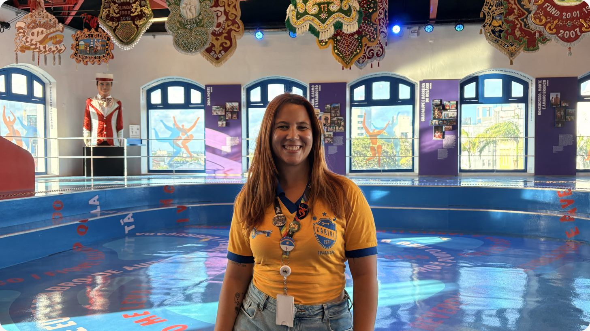
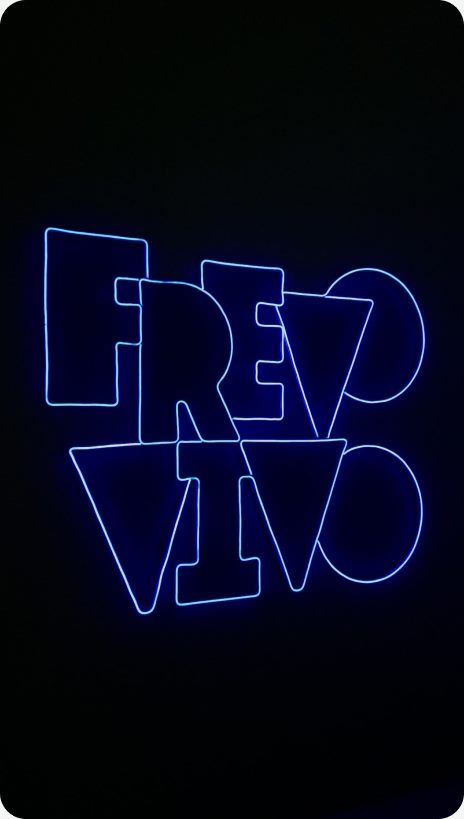
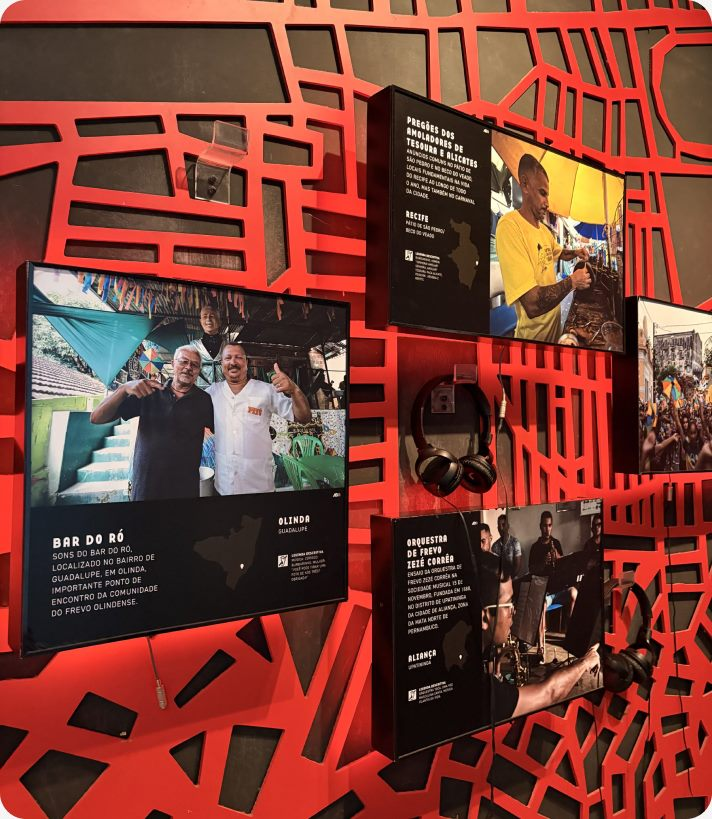
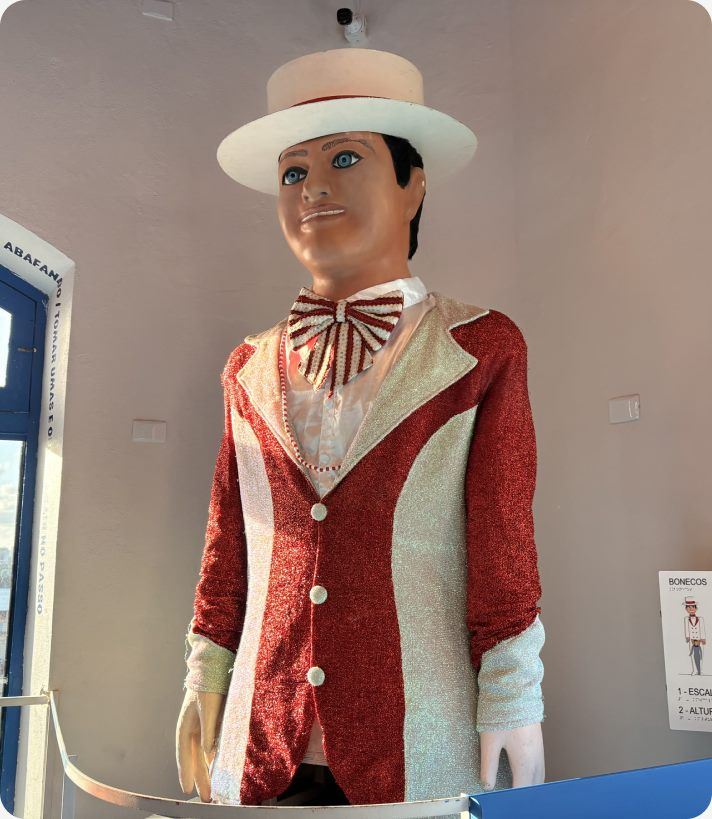
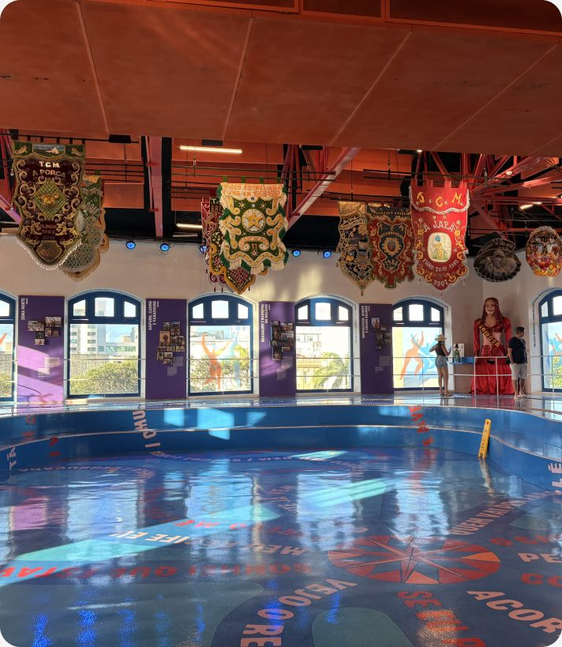
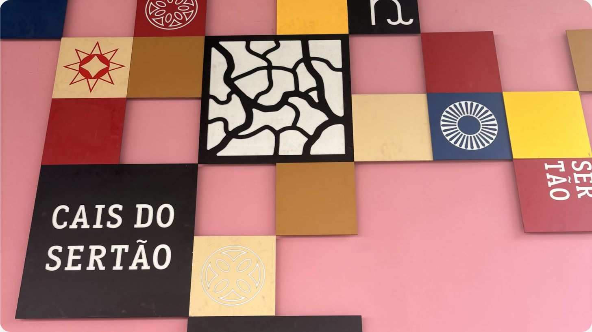
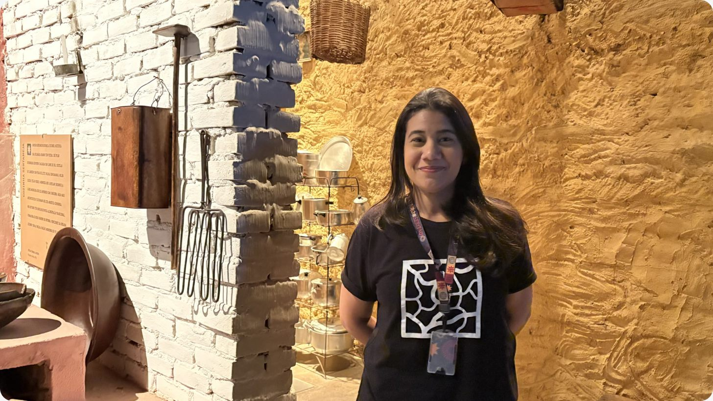
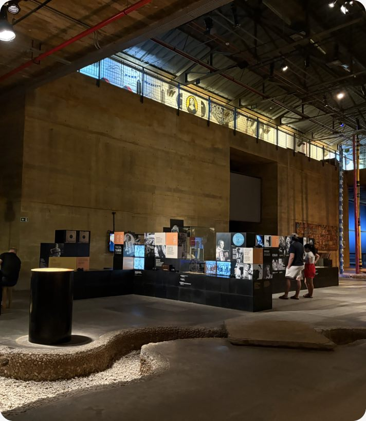
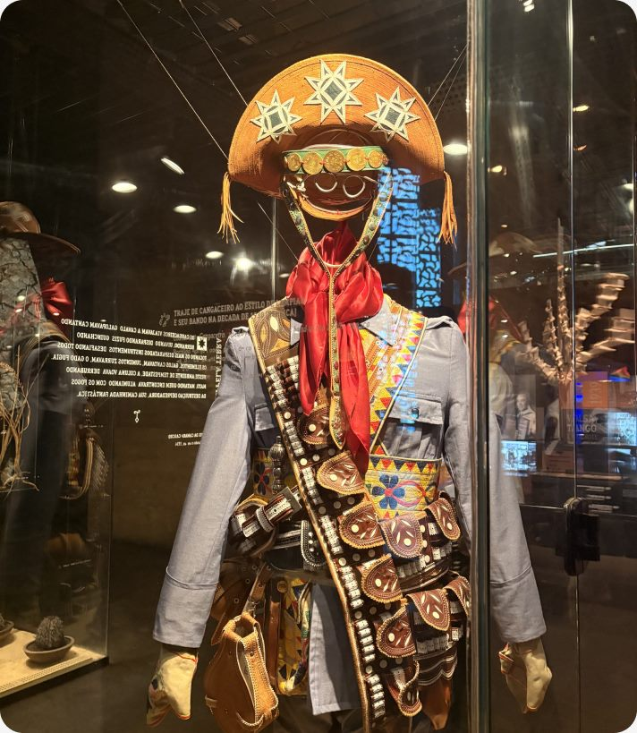
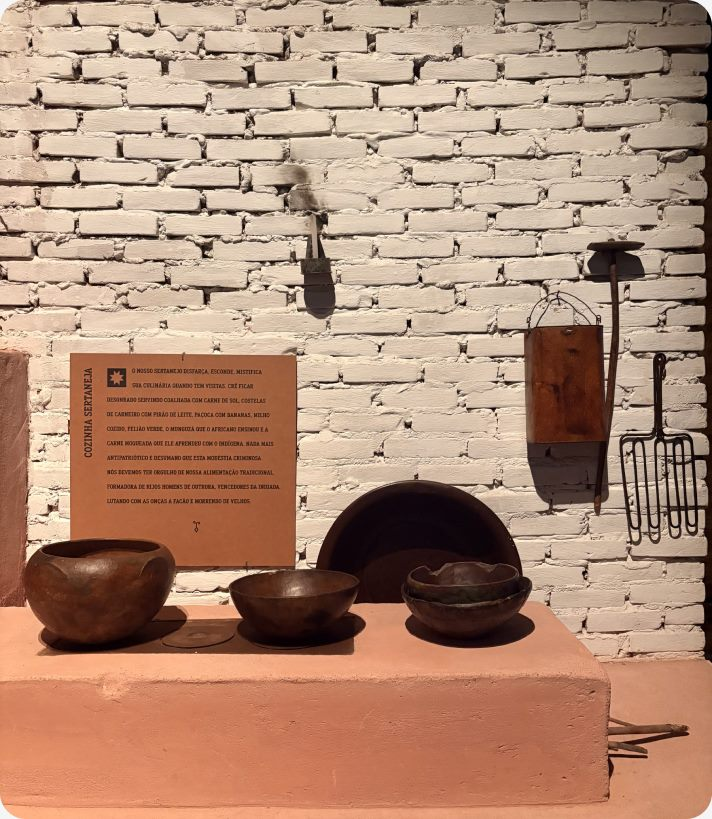

Quem se planeja para conhecer o Recife Antigo pela primeira vez costuma colocar os museus Paço do Frevo e Cais do Sertão entre as atrações imperdíveis no roteiro. Inaugurados em 2014, os dois espaços passaram a ser visitados com frequência pelos turistas que visitam a região e são ótimas opções para mostrar como a cultura pernambucana é rica e vasta.
Fundado no Dia Nacional do Frevo em 9 de fevereiro de 2014, o Paço do Frevo nasceu do desejo de difundir a música e a dança do ritmo típico do estado e de ser um lugar considerado vivo. Instalado na antiga sede da Western Telegraph Company Limited, o local está localizado na Praça do Arsenal e já recebeu mais de 1 milhão e meio de visitantes desde a sua fundação. O espaço cultural pertence à Prefeitura do Recife e é gerido pelo Instituto de Desenvolvimento e Gestão (IDG), sendo utilizado também para fomentar pesquisas sobre o frevo. No Paço do Frevo, há apenas um guia turístico contratado para mostrar as exposições presentes no museu mediante agendamento.
Segundo a cientista social e pedagoga Mikaella Rodrigues, que é coordenadora do setor educativo do Paço, a ideia é que os próprios trabalhadores levem os turistas para dentro do centro cultural. Para isso, são fornecidas formações semestrais ao setor sobre as instalações do espaço e noções sobre a relação do frevo com o turismo recifense. A ação ocorre desde 2024 e costuma ser realizada para até 40 pessoas que ajudam a movimentar o Recife Antigo com o trabalho fornecido para os visitantes.
“A gente atinge vários públicos, como professores e profissionais de turismo. São essas pessoas que muitas vezes trazem o público para dentro do museu, então, a gente sentiu uma necessidade de formar eles quanto à história do frevo.”

O trabalho do educativo do Paço do Frevo busca levar uma contextualização sobre a manifestação cultural e ter trocas sobre o trabalho que vem sendo realizado pelos guias turísticos da região. Esse contato mais próximo possibilitou que quem trabalha no local pudesse conhecer aqueles que estão fora dele e passasse a levar em conta as opiniões dessas pessoas.
“Com esses profissionais de turismo sendo formados, eles conseguem fazer essa contextualização do frevo, esse trabalho com o frevo e as exposições com os turistas que eles trazem. Foi um jeito que a gente conseguiu de fazer essas formações e de abraçar esse público”, citou Mikaella.
A realização das formações ajudou a divulgar mais conhecimento acerca do frevo para esses trabalhadores com detalhes como se deu a origem e o desenvolvimento do gênero, algo que pode ser levado para as visitas guiadas que ocorrem fora do museu e é um exemplo da importância que esse tipo de vivência é capaz de fornecer no turismo do Recife Antigo.
“A gente começou com informações aqui no Paço, entendendo exposições, entendendo um pouco da história do frevo e agora a gente está no movimento de fazer formações para fora. Esse ano, a gente fez uma formação sobre o Centro do Recife e a história do frevo, com um olhar para o centro e sobre onde foi cada ponto importante para o frevo. A gente foca na história porque não necessariamente eles precisam estar no Paço para falar sobre frevo, mas em qualquer lugar que eles tiverem, eles podem criar essas ferramentas e também é uma oportunidade deles conhecerem outros lugares.”
Os guias também passaram a ter mais acesso sobre as programações semanais oferecidas no local e começaram a ter um diálogo mais frequente com o museu graças ao projeto. Na alta temporada, principalmente, Mikaella enxerga a importância de pensar estrategicamente como chamar os profissionais e o público para comparecer ao centro cultural.
“É a partir dessas formações que a gente consegue um diálogo para eles entenderem que nós não estamos brigando pelo espaço. É de todo mundo, eles podem vir e entrar. Temos políticas de gratuidade, os profissionais de turismo aqui não pagam a entrada, trazem as pessoas e podem entrar, fazer as suas visitas e tirar as suas fotos, e o que a gente quer é isso mesmo, que eles venham e tragam seus visitantes.”
“A gente escuta muito eles entendendo o que é que eles querem. Toda vez que a gente troca uma exposição, o primeiro encontro de profissionais de turismo é sobre a nova exposição. Como é que a gente troca a exposição e não informa para eles? A gente teve uma grande troca no terceiro andar pela primeira vez no ano passado desde 2014, quando o museu abriu.”
Além do trabalho como guia, existem os educadores que desenvolvem projeto social e pesquisas para o Paço, fazendo ainda atendimentos ao público e visitas guiadas.
“Tem visitante que vai querer que o guia tenha 30 minutos ali para fazer tudo, aí o guia vai se adaptando. Aqui é o contrário, os visitantes que querem vir agendam e têm que se adaptar ao que os educadores estão dizendo.”
A escolha de ter o museu sediado no Bairro do Recife também não é por acaso. Mikaella relembra as raízes do frevo, que nasceu e foi criado na capital pernambucana. Ela também cita que o Marco Zero é o principal ponto carnavalesco da cidade, o que contribuiu com a decisão da localização do espaço aliada à possibilidade de integração com outros centros turísticos como o MoAfro.
“Se você for falar de frevo e for indicar frevo para os turistas, ele acontece aqui no Marco Zero. Tem grande parte acontecendo aqui, então, eu acho que foi um lugar estratégico mesmo pensado pela Prefeitura do Recife, que é o Recife Antigo que recebe muitos turistas e é uma ilha turística pensada para esse turismo.”
Críticas que o Paço costuma sofrer devido a ausência da promoção de mais práticas de frevo no bairro foram minimizadas por Mikaella. Para a coordenadora, esse é um fator que foge da ideia originalmente pensada durante a criação do espaço cultural.
“Nós somos um museu e não uma casa de festa e de eventos. O Paço surge como um lugar de fomento e difusão, enquanto museu, a gente fala que é um museu vivo porque a gente tem programações artísticas com pessoas, mas elas não são todo dia. A gente não deixa de fazer frevo, só que não têm condições da gente colocar passistas aqui sempre. Nós não somos esse tipo de museu. É uma escolha mesmo”, iniciou.

A visão defendida pelo local é de que o ritmo pode ser mostrado através das exposições e das vivências experienciadas lá, defendendo que o museu tem um propósito social que não pode ser esquecido.
“Não é só esse frevo que a gente quer comunicar. Tudo que passa até a programação artística tem essa função social, de fomento e difusão, de conhecer os fazedores e fazedoras do frevo para dar voz a eles, mas a gente não consegue fazer isso todos os dias. Eu acho que nem é sobre isso no museu. As exposições também precisam estar ali como destaque. Acho que se a gente colocasse para assistir música, apresentação todo dia, a galera só ia vir para isso e a exposição ia ficar um pouco de plano de fundo. A ideia não é essa.”
O objetivo do Paço do Frevo também é desmistificar e ampliar a ideia sobre a manifestação cultural, colocando os visitantes para refletirem sobre como entendem o que é o frevo e fugir de estereótipos comuns como o das sombrinhas coloridas tipicamente vistas no Carnaval de Pernambuco.

“Acho que é um pouco do exercício de que frevo é esse que o turista tá pensando e do próprio Paço de pensar qual é o frevo que a gente quer transmitir. Chegam aqui e perguntam: ‘Vocês não tem uma sombrinha colorida?’ Não, porque a sombrinha colorida é uma coisa do marketing, de vender o frevo. Se você pegar um passista aí, ele não tem a sombrinha colorida, não necessariamente tem a sombrinha colorida e pequenininha. Não, ele tem uma infinidade e uma liberdade de criar uma sombrinha que seja melhor para ele. Ela pode ser toda de paetê, de lantejoula, não importa. É um pouco desse frevo que a gente quer mostrar, o frevo do cotidiano, e não o frevo que se criou meio que um folclore em cima.”
No entanto, na opinião dela, apesar dos comentários, são oferecidas muitas programações de arte com eventos, shows e apresentações de dança no lugar, mostrando o ideal de que o museu é esse espaço vivo.
“Eu acho que o Paço é esse lugar. Se a gente faz essas pesquisas, a gente está falando de fomento à cultura e o frevo, a gente tem que pesquisar o frevo que foi, o frevo que está sendo e o frevo que vai ser”, falou.


“A gente tenta trabalhar um pouco essas críticas nas nossas atividades, nas nossas formações, nas programações e nos nossos diálogos com os visitantes. A galera diz que não gostou porque não tem frevo para assistir. ‘Como é que a casa do frevo não tem frevo?’ Aí eu respondo: ‘Opa, como assim não tem frevo? Tem boneco, estandarte, vídeo, foto e áudio... Que frevo é esse que você quer ouvir? É um frevo artístico? Então você vai ter que procurar um teatro, uma casa de evento, uma agremiação para você ver esse tipo de frevo.’ A gente tem vivências de dança e de música nos finais de semana, que é um pouco dessa tentativa, ainda nos modos que a gente acredita do que é um museu e fazer com que as pessoas conheçam, toquem, aproveitem e aprendam os passos. Quando a gente fala vivência, a gente não bota uma apresentação de frevo, porque não é uma apresentação. É uma vivência, é um momento de aprender alguns passos de frevo.”
Para lidar com as críticas e demonstrar o movimento presente na região turística, o Paço do Frevo segue divulgando novidades para o público, seja dentro ou fora do território do centro cultural, e levando o que existe de mais rico na cultura pernambucana.
Paço do Frevo
Onde: Praça do Arsenal da Marinha, 91 – Bairro do Recife
Entrada: Inteira (R$ 10) e Meia (R$ 5), gratuita às terças-feiras
Como agendar: Sympla e diretamente na bilheteria
Funcionamento: Terça a sexta-feira: 10h às 18h, com última entrada às 17h30
Sábado e domingo: 11h às 19h, com última entrada às 18h30
Cais do Sertão

Já o Centro Cultural Cais do Sertão pertence a Empetur e fica no Armazém 10 do antigo Porto do Recife e mostra a diversidade cultural por meio de homenagens à região sertaneja e ao cantor Luiz Gonzaga para o público desde o dia 3 de abril de 2014.
Com exposições divididas em sete áreas interativas, Thalita Mesquita trabalha como guia turística do museu há quase oito anos e é uma das responsáveis por apresentar o local aos turistas quase todos os dias. Formada em Gestão em Turismo pelo Instituto Federal de Pernambuco (IFPE), iniciou a trajetória na recepção do Cais do Sertão e depois passou a compor o time do setor educativo do museu, que trabalha recebendo tanto os visitantes espontâneos quanto os grupos previamente agendados.
Com cinco horários disponíveis para visitas guiadas em grupos todos os dias, Thalita costuma deixar as pessoas à vontade para decidirem como preferem conhecer o acervo do museu.

“A gente mostra o museu e qual foi a ideia de apresentar esse Sertão através da narrativa de Luiz Gonzaga. A gente fala sobre os territórios do museu, que é a ideia de que o museu é dividido em espaços e tudo isso depende da dúvida e do interesse da pessoa. Às vezes tem turista que só quer olhar, prefere ver sozinho, fotografar e não gosta de ninguém abordando e tem gente que gosta de alguém explicando”, comentou a guia.
Na opinião da funcionária, o Cais do Sertão foi criado com o objetivo de apresentar mais sobre a cultura sertaneja para os visitantes, principalmente por estar inserido dentro do Bairro do Recife, que é a principal região turística da capital pernambucana.
“Quando tiveram a ideia de construir o museu, foi para trazer um pouco da cultura do sertão, que às vezes não é tão visitada. É um jeito de aproximar as pessoas dessa temática, que é uma parte importante da nossa cultura.”


Segundo Thalita, o contato com as pessoas é um dos fatores que tornam o trabalho interessante para ela por poder mostrar o legado do Sertão e de Luiz Gonzaga na cultura brasileira.
“Eu gosto quando vem uma pessoa que não conhece tanto, nunca não sabe como é o dia a dia do sertão, não conhece muito o que faz um vaqueiro. Eu acho interessante trazer isso, principalmente para quem é de fora, que não conhece muito essa parte do Nordeste, e você tem uma forma de mostrar, de falar e de ter essa troca porque você consegue muito conversar com as pessoas, quando as pessoas estão dispostas, então você consegue conversar. É algo bem informal, mas ao mesmo tempo a conversa é bem construtiva. Tem as pessoas que entram e se emocionam quando veem a casa, aí gostam de contar a história”, disse.

A educadora acredita que o museu é um lugar para todos aqueles que desejam visitar e frequentar, sem fazer nenhum tipo de distinção ao público. Em 2026, mais de 60 mil pessoas já foram visitar e conhecer o Cais do Sertão.
“Eu acho que o turismo também é importante para a cultura, não existe uma separação. São públicos diferentes, mas todo mundo tem que visitar os museus, tanto os locais quanto os turistas. O museu é lugar de todo mundo, então eu acho que tem tudo a ver você juntar as duas coisas.”
Além de Thalita, outras sete pessoas trabalham como educadoras no centro cultural. Entre elas, dois são músicos e ficam responsáveis pela parte musical do museu.
“Eles trabalham na sala de música que a gente tem aqui, que é onde acontece uma vivência com quem tá visitando com vários instrumentos e a pessoa pode entrar, experienciar uma atividade musical e tocar um instrumento.”
Cada papel possui uma divisão importante para o funcionamento do Cais do Sertão e são essas vivências que ajudam a mostrar uma visão renovada do lugar para os visitantes.
“Tem gente de diferentes áreas, é sempre misturado e por mais que o tema seja o mesmo, cada um tem uma linguagem diferente de falar sobre aquilo”, relatou.
A movimentação pelo Recife Antigo também não passa despercebida pelos guias turísticos. Thalita e os colegas esclarecem as dúvidas sobre o que pode ser feito durante a estadia no bairro e costumam dar opções para os visitantes. Entre as principais recomendações, além do Paço do Frevo, estão a Torre Malakoff e a Caixa Cultural.
“As pessoas perguntam pra gente: ‘O que é que eu posso fazer? O que é que você me indica? Qual outro lugar eu posso visitar? Me indica outros museus’. Aí a gente acaba fazendo isso de apresentar a cidade também que acontece muito das pessoas perguntarem. A gente acaba saindo um pouco do museu e falando sobre outras coisas também.”
Indo do ritmo carnavalesco até a tradição sertaneja, o Paço do Frevo e o Cais do Sertão passaram a representar uma parcela importante para o funcionamento e o fomento do turismo do Bairro do Recife, sendo alguns dos principais equipamentos fornecidos para os turistas atualmente.
Centro Cultural Cais do Sertão
Onde: Av. Alfredo Lisboa, S/N – Bairro do Recife
Entrada: Inteira (R$ 10) e Meia (R$ 5), gratuita às terças-feiras
Como agendar: Diretamente na bilheteria
Funcionamento: Terça a sexta-feira: 10h às 16h
Sábado e domingo: 13h às 18h